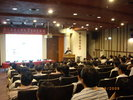
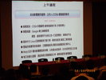
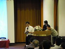

COSA活動記錄簿
留下COSA所辦活動之紀錄
首頁
相簿目錄
::
最新上傳
::
最新留言
::
熱門圖片
::
最高評分
相簿首頁
>
建立開放應用環境論壇
>
[2009] 第八屆OSS論壇大會
最新上傳 - [2009] 第八屆OSS論壇大會

83 次觀看
九月 09, 2010

89 次觀看
九月 09, 2010
71 次觀看
九月 09, 2010
70 次觀看
九月 09, 2010
72 次觀看
九月 09, 2010
75 次觀看
九月 09, 2010
71 次觀看
九月 09, 2010

67 次觀看
九月 09, 2010
20 張圖片，共 2 頁
1
2